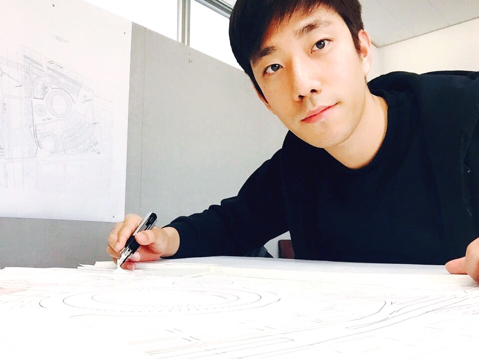

도시연구자 · 건축가
사람들의 활동과 의견이 도시가 계획되는 방식에 어떻게 반영될 수 있을까
도시 연구자 사람, 공간, 그리고 건물 잠재된 공중
안녕하세요, 도시를 연구하는 박영준입니다.
사람들의 활동과 행태와 의견이 도시가 계획되는 방식에 어떻게 반영될 수 있는지,
그리고 그렇게 드러난 것을 어디까지 믿을 수 있는지를 연구합니다.
이를 위해, 저의 연구활동은 4가지로 나눌 수 있습니다:
1) 통계와 데이터 기반 연구 (Research),
2) 건축 및 도시설계 (Design),
3) AI 에이전트 시스템 개발 (Programming),
4) 그리고 도시설계, 도시 데이터 분석을 가르치는 교육 (Teaching)